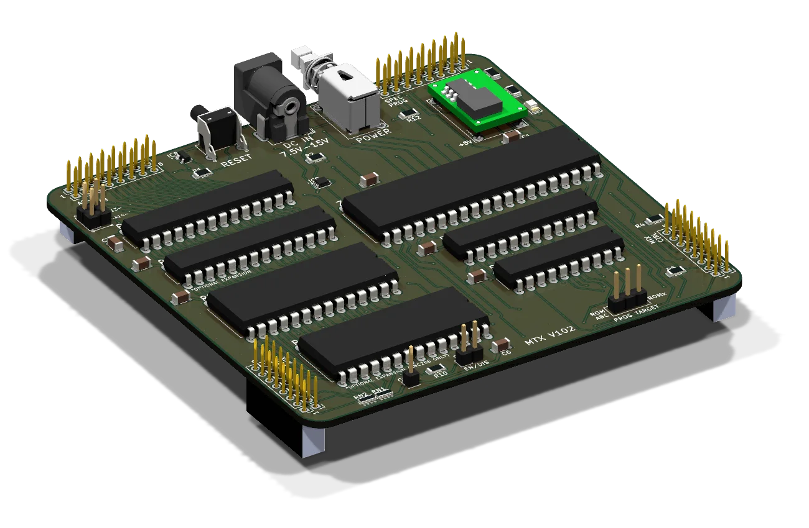
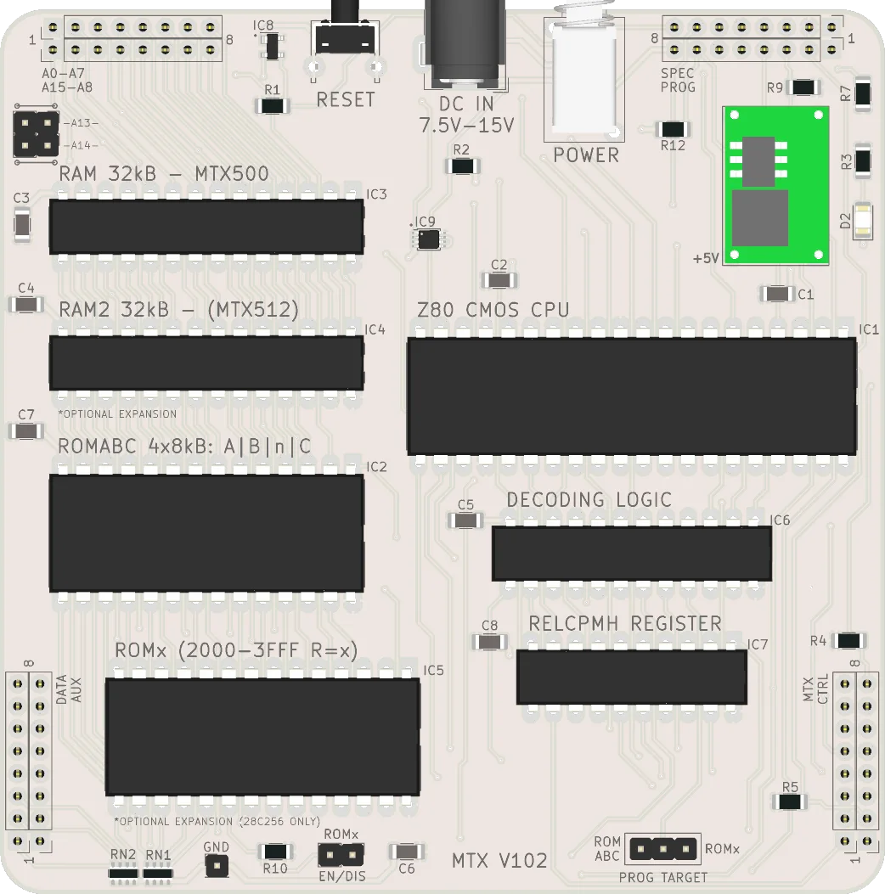
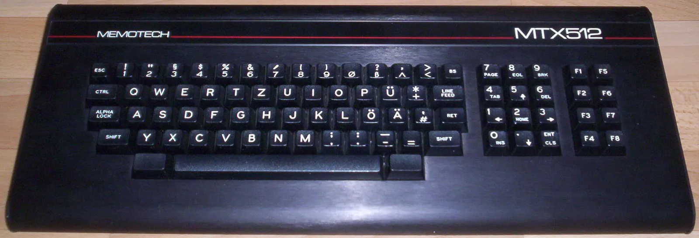
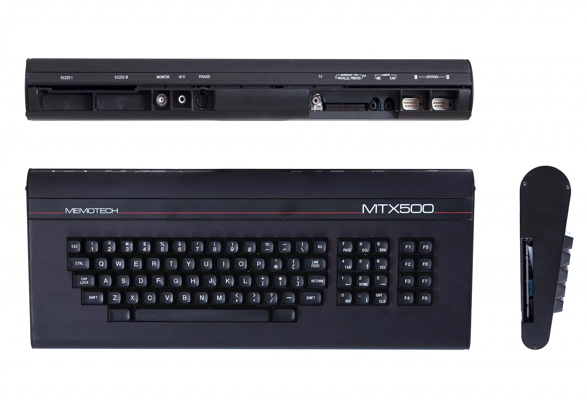

V102-MTX-2
MTX512 CPU board
The Memotech's paged memory, rebuilt so that the original software runs.
- CPU
- Z80, clocked by the video board
- ROM
- 32 K as four 8 K blocks, plus optional ROMx
- RAM
- 64 K as two 32 K SRAMs
- Paging
- 74AHC273 register at port 00h
- Needs
- I/O and video + sound boards

What's on the board

How it works
- OUT (00h) latches RAM page P0–P3, ROM page R0–R2 and CPM into a 74AHC273, clocked by the VDP board's OUT0
- PLD maps OS ROM at 0000–1FFF, paged ROMs at 2000–3FFF, paged RAM above; CPM = 1 gives all-RAM
- One 28C256 holds blocks A | B | n | C; ROM page 6 maps the ROMx expansion, page 7 an off-board cartridge
- No oscillator: the CPU clock is bus 4M from the VDP board
What it took
- Exact MTX512 memory and I/O map: original BIOS, BASIC and games run unmodified
- Four 8 K ROMs packed into one EEPROM; PLD rev 2 added ROMA13 to reclaim the spare block
- SW3 PROG TARGET lets one programmer burn either the main ROM or ROMx
- Best-decoupled board of the family (seven 100 nF)
Next revision
- Gate ROM selects with /RD: ROM drives the bus on writes
- Add a pull-down on ROMCSX; mask decode while programming
- CP/M mode with R = 6 loses 16 K (PLD fix)
- Local clock option; 74AHCT273 for input levels; check map against MTX512 docs
The machine it recreates
The MTX 500 had 32 KB of RAM and the MTX512 had 64 KB. The second RAM chip on this board makes the same difference.




Turn the pages yourself
One write to port 00h decides what the Z80 sees. Pick a ROM page, a RAM page and a mode. The map follows the board's decode logic.
Schematic
Tap to open it full screen, then pinch, scroll or drag to explore. It stays sharp at any zoom.
Photo and files
Live photo: board-mtx.jpgThe built MTX512 CPU boardStraight down or three-quarter view, chips fitted, plain background.
Downloads
Read the PLD source, V102-MTX-2
Name v102-mtx-2 ;
PartNo 00 ;
Date 15-1-2024 ;
Revision 002 ; // now no need for the romA image at 4000h
Designer Nigel ;
Company Nova Embedded Solutions ;
Assembly None ;
Location xx ;
Device g20v8a ;
/* *************** INPUT PINS ******************** */
PIN 1 = A13 ;
PIN 2 = A14 ;
PIN 3 = A15 ;
PIN 4 = MREQB ;
PIN 5 = P0 ;
PIN 6 = P1 ;
PIN 7 = P2 ;
PIN 8 = P3 ;
PIN 9 = R0 ;
PIN 10 = ROMCSX ;
// PIN 11 Spare input
PIN 13 = R1 ;
PIN 14 = R2 ;
// outputs x 7
PIN 21 = SELECT ; /* prog target select - 1 for ROMABC, 0 for ROMx */
PIN 23 = CPM ;
FIELD ADDRESS = [A15..0] ;
FIELD PAGENO = [P3..0] ;
FIELD ROMNO = [R2..0] ;
/* *************** OUTPUT PINS ******************** */
PIN 15 = ROMA13 ; // A13 pin on main ROMABC to utilise redundant 8kB */
PIN 16 = ROMA14 ; // A14 pin on main ROMABC */
PIN 17 = RAM ; // SIMPLE FOR MTX500 WITH 32KB FIXED BETWEEN 8000-FFFF */
PIN 18 = ROM7 ; // select for cartridge rom 7 - off board */
PIN 19 = ROMX ; // optional stand-alone user rom - page 6 2000-3fff */
PIN 20 = ROM ; // Main ROM and an 8kB programmable user space */
PIN 22 = RAM2 ; // Third and forth 16k ram blocks - see below
/* *********** INTERMEDIATE EQUATIONS ************** */
ROM6 = R2 & R1 & !R0 ;
//* can't seem to get ROMNO:6 to behave as expected
/* *************** OUTPUT LOGIC ******************** */
ROMA13 = (!ROMCSX & A13 & !R1 )
# (ROMCSX & A13 ) ;
//* transparent while programming needs embedded rom to have r1 and r0 set i.e. rom 3 or 7
ROMA14 = (!ROMCSX & R0 & A13 )
# (ROMCSX & A14 ) ;
//* transparent while programming
!ROM = (ADDRESS:[0000..1fff] & !CPM & !MREQB)
# (ADDRESS:[2000..3fff] & ROMNO:0 & !CPM & !MREQB)
# (ADDRESS:[2000..3fff] & ROMNO:1 & !CPM & !MREQB)
# (ADDRESS:[2000..3fff] & ROMNO:3 & !CPM & !MREQB)
# (ROMCSX & SELECT) ;
//* Main ROM A|B|n|C with R0 bit driving ROM address pin A14 to offset ROMC
//* additional embedded rom also mapped to spece between b and c must be rom 3 or 7
!ROMX = (ADDRESS:[2000..7fff] & ROMNO:6 & !CPM & !MREQB)
# (ROMCSX & !SELECT) ;
//* On board stand alone ROM 2000-3fff - can be set to any spare space
!RAM = (ADDRESS:[8000..BFFF] & PAGENO:0 & !MREQB)
# (ADDRESS:[C000..FFFF] & !MREQB) ;
//* MTX 500 ram P=0 8000-BFFF OR P=X C000-FFFF
!RAM2 = (ADDRESS:[4000..7fff] & PAGENO:0 & !ROM6 & !MREQB)
# (ADDRESS:[8000..bfff] & PAGENO:1 & !CPM & !MREQB)
# (ADDRESS:[0000..3fff] & PAGENO:0 & CPM & !MREQB) ;
//* In ROM mode (!CPM): (P=0 & 4000-7fff) and (P=1 & 8000-Bfff)
//* in RAM mode (CPM): (P=0 & 0000-3FFF) and (P=0 & 4000-7FFF)
!ROM7 = (ADDRESS:[2000..3fff] & ROMNO:7 & !CPM & !MREQB) ;
//* R=7 2000-3fff
/* END OF FILE */Game and BIOS ROMs are not published.